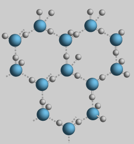

The Expansion of Water Upon Freezing
|
The fact that water expands upon freezing causes icebergs to float. The fact that water reaches a maximum density at about 4°C causes bodies of water to freeze on the top first. Then the further expansion as a part of the phase change keeps the ice floating with some 8% of its mass above the surface. The expansion during the phase change may be shown on a PvT surface, and contrasts with the contraction upon freezing of most substances.
|
The expansion upon freezing comes from the fact that water crystallizes into an open hexagonal form. This hexagonal lattice contains more space than the liquid state. |  |
While the hexagonal ice form discussed above is the primary form of ice and is the dominant form from the freezing point at 273K down to about 72 K, 13 different crystalline forms of ice have been idendified according to Debenedetti and Stanley.
Water concepts
Chemistry concepts
| HyperPhysics*****Chemistry | R Nave |